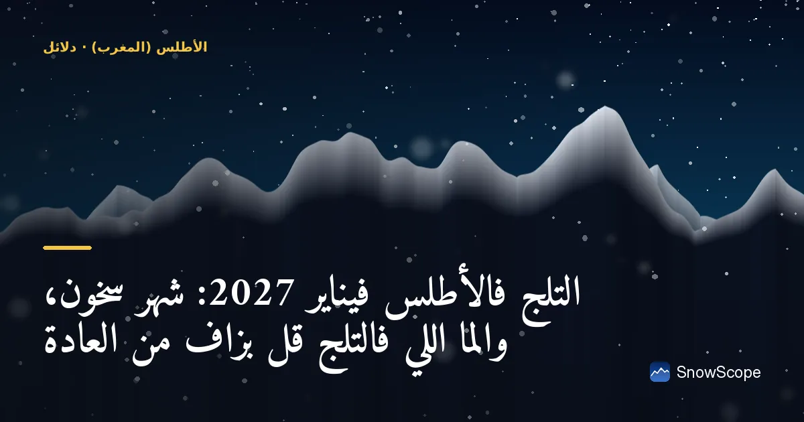

التلج فالأطلس فيناير 2027: شهر سخون، والما اللي فالتلج قل بزاف من العادة
شهر يناير دافي قدام عبر الجبال ديال المغرب. التوقعات الموسمية كتقول درجات الحرارة 2 °C فوق العادي والمطر قريب ديال العادي، اللي مع بعضهم كايفضلو المطر على التلج على البيسطات الوسطانية. مع 45 شتوات اللي فاتو اللي كنقدرو نعتمدو عليها، التوقعات هي تقريبا ثلث ديال التلج ديال يناير العادي: حوالي 69 مليون م³ بدل 206.
شوف توقعات التلج مباشرة ديال Atlas فالتطبيق ديال SnowScopeالعلو ديال التلج، التنبيهات والخريطة 3D، فابور.

فين كاتضعف احتمالات التلج
خريطة SnowScope كتقسم الأطلس إلى مناطق حوالي 10 كم وكتقارن كل وحدة مع تاريخها ديالها ديال يناير. كل الجهة الفوقانية اللي عادة كيكون فيها التلج فهاد الشهر هسا كاتميل لجاف. الاحتمال باللي أي منطقة كاتكون فيها التلج أعمق من العادي كايتراوح بين 24 % و 35 %، مع قيمة عادية حوالي 28 %. ما حتى منطقة واحدة اللي تميل لشهر أكثر تلج.
النمط هو متساوي من الغرب لشرق: Toubkal فالأطلس العالي الغربي، M'Goun فالوسط، Ayachi فالشرق، و Bou Iblane فالأطلس الوسيط كاتبان نفس الميل.
درجة الحرارة والمطر: متاع درجات الحرارة
توقعات أوروبا كاتتفق بقوة بلي يناير كايكون دافي: 92 إلى 94 % ديال 51 توقع كتقول درجات الحرارة 1.9 إلى 2.2 °C فوق العادي فوق أحواض الجبال. المطر كايبقا قريب ديال العادي، كاينقص بين 5 % وتحت العادي و 1 % فوق العادي عبر مناطق مختلفة.
فالأطلس، شوية درجات حرارة كاتغير الحد بين التلج والمطر. هاد الخط كاينة بين 2000 و 2500 م العلو. كاع يناير هاكا دافي، العواصف كاتجيب الماء لكن على البيسطات الوسطانية والسفلية كاتجي بحال مطر، ما تلج. غير الجبال العالية والمنحدرات الشمالية فوق 2500 م اللي كتبقا التلج أطول.


شنو اللي متوقع فالجبال العالية
على القمم (فوق 2500 م، أو 2300 م على Bou Iblane)، العلو ديال التلج العادي فيناير هو عادة 5 سم على Toubkal، 6 سم على M'Goun، 10 سم قرب Ayachi و 8 سم على Bou Iblane. هاد أرقام متوسط الحوض، المنحدرات الجنوبية الشرقية كتذوب بسرعة، أما المنحدرات الشمالية كتبقا أعمق. التوقعات كتقطع هاد تقريبا نص: إلى 3، 3، 5 و 4 سم.
معادل التلج (الماء اللي كيتحرر بالذوبان؛ 1 ملم متساوي 1 ليتر فمتر مربع) كاتقول قصة أكثر جاف. يناير عادي كاينة فيه 10 ملم على Toubkal، 16 ملم على M'Goun، 24 ملم على Ayachi و 16 ملم على Bou Iblane. التوقعات كتقطع هاد إلى 7، 7، 12 و 8 ملم. النسبة ديال الجهة الفوقانية اللي كاينة فيها التلج كتنقص بشدة: M'Goun من 69 % إلى 41 %، Ayachi من 77 % إلى 60 %.

الماء ديال الجبال للوديان تحت
التلج كاينزل الماء للأودية والسدود اللي كاتغذي السهول فالربيع. كاع جبال ديال المغرب، يناير عادي كاينة فيه 206 مليون م³ ديال الماء متجمد فالتلج. هاد التوقعات كاتتوقع 69 مليون م³، مع إحتمال أكثر بين 31 و 235، وغير 31 % احتمال ديال اللي كايتجاوز العادي.
حوض Oum Er-Rbia، اللي كاتصب من الأطلس العالي الوسطاني والشرقي، عادة كاينة فيه 96 مليون م³ فيناير؛ التوقعات 30. Moulouya (عادة 36، التوقعات 12)، Draa (عادة 26، التوقعات 11)، Sebou (عادة 15، التوقعات 5) و Tensift (عادة 14، التوقعات 7) كاتميل كاتنقص. هاد التلج ديال يناير كايذوب خلال الربيع؛ حتى ما فبروري ومارس كايجيبو التلج أكثر، الأودية كاتجري الماء أقل عبر السدود.


الدروس من الشتوات اللي شبهة هاد
الجنيرات اللي فاتو اللي الطقس فيها كان قريب ديال هاد التوقعات هي 2016، 2024 و 1998. بحال ما نقارنهم، كنشوف بلي التلج الأقل كاصيب فالسنين الدافية، لكن ما هو مؤكد، عاصفة واحدة من الأطلسي كتقدر تجيب التلج على المرتفعات العالية.
التوقعات الموسمية كاتغير الاحتمالات عبر الشهر، ما كاتقفل نتيجة واحدة. بحال القرارات ديال التزلج أو إمدادات الماء أو السفر فالتلج، شوف توقعات 7 أيام كاع يناير كايتفسح والعواصف اللي كاتجي.
نصايح للي كيتزلجو
- برمج رحلات التزلج للأطلس العالي فالنص أو الآخر ديال يناير، بعد العواصف الأطلسية، ما بحال بداية الشهر.
- استهدف القمم والمنحدرات الشمالية على 2500 م وفوق: هاد اللي كاتبقا التلج أطول فشهر دافي.
- تابع خريطة SnowScope يوميا فيناير بحال ما كاتتحرك خط التلج بعد كل عاصفة؛ جنب الأرض الفارغة.
- لمديرين الماء: يناير أقل معناه الماء اللي كايجري فالربيع كايعتمد أكثر على فبروري مارس. تابع كل موسم الشتا، ما غير هاد الشهر.
- إذا توقعات 7 أيام كاتبان برد أو عاصفة جاية، هاد هو الوقت ديالك بحال ما كاتتوقع التلج الجديد؛ الفترات الدافية معناها مطر حتا على الجهة الفوقانية.
على هاد الأرقام
العلو ديال التلج فالمحطات هو أكثر تلج فالجهة الفوقانية فالتاريخ المكتوب؛ هادو تقديرات لمنطقة، ماشي قياس فنقطة وحدة. التوقعات يمكن تتبدل. ديما شوف النشرة الرسمية ديال الانهيارات قبل ما تخرج من البيست.
كيفاش تستاشهد بهاد المقال
للبحث، التعليم ولا الصحافة: الأرقام والرسومات تقدر تعاود تخدم بيهم بحرية تحت CC BY 4.0 مع هاد الاستشهاد.
SnowScope (2026), التلج فالأطلس فيناير 2027: شهر سخون، والما اللي فالتلج قل بزاف من العادة, https://snowscope.app/blog/ar/2026/11/atlas-january-2027-snow-outlook.html, تشاف ف 2026-11-10
SnowScope (Atlas Labs). (2026, November 10). التلج فالأطلس فيناير 2027: شهر سخون، والما اللي فالتلج قل بزاف من العادة. SnowScope snow reports. https://snowscope.app/blog/ar/2026/11/atlas-january-2027-snow-outlook.html
BibTeX
@misc{snowscope2026atlasjanuary2027snowoutl,
author = {{SnowScope (Atlas Labs)}},
title = {التلج فالأطلس فيناير 2027: شهر سخون، والما اللي فالتلج قل بزاف من العادة},
year = {2026},
month = nov,
howpublished = {\url{https://snowscope.app/blog/ar/2026/11/atlas-january-2027-snow-outlook.html}},
note = {Published 2026-11-10 10:59 UTC; accessed 2026-11-10}
}· CC BY 4.0 · الطريقة، الداتا والأدوات →
تابع Atlas
فابور: ميساج ملي يجي التلج، والتوقعات كل صباح.
تقارير أخرى ديال التلج

تقريبا 65 مم فوق Toubkal حتى ل 12 نونبر، ولكن علو 0 °C كيبقى قريب من 4,000 م: الشتا ف Oukaïmeden وفالوديان، والتلج غير فالفوق.

المحطات ديال التزلج فالأطلس مافيهومش التلج اليوم. الموديل ديال التلج ديالنا كيلقى التلج غير فالقمم العالية: تقريبا 80 كم² ديال الأرض اللي فيها التلج، …

التلج تبدل من نهار 9 نونبر، من 40 كم² ل 20 كم² اليوم؛ ونهار 14 نونبر التوقعات ديالنا كتعطي 10 كم². اليوم البيستات ديال الأطلس عريانين. غير القمم …